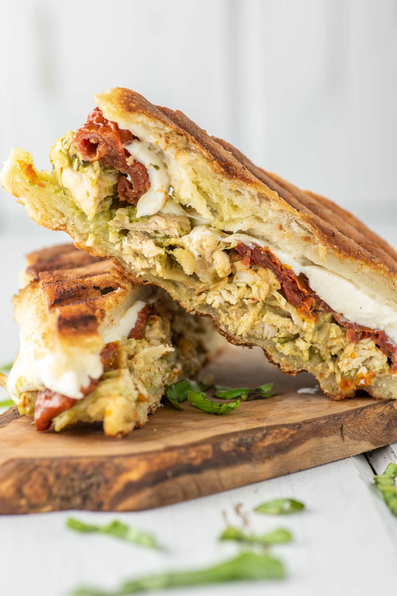

My Recipe Book
Chicken Pesto Panini

Ingredients
- 4 tbsp. extra-virgin olive oil, divided
- 2 boneless skinless chicken breasts
- 1 tsp. dried oregano
- 1/4 tsp. crushed red pepper flakes
- Kosher salt
- Freshly ground black pepper
- 2 ciabatta rolls
- 1/4 c. pesto
- 1 tomato, thinly sliced
- 4 oz. fresh mozzarella, thinly sliced
Step by Step Guide
- In a large cast iron skillet over medium heat, heat 2 tablespoons oil.
Season chicken with oregano, red pepper flakes, salt and pepper.
Add chicken to skillet and cook until golden and cooked through, 7 minutes per side.
Remove from pan.
- Build panini: Slice ciabatta rolls in half, then spread about ¼ of the pesto on bottom half of each roll.
Top with tomato, chicken, and mozzarella. Spread remaining pesto on the top half of each roll.
- Heat a grill pan with remaining 2 tablespoons oil and add one panini.
Cook until bottom is golden and cheese is starting to melt, 5 minutes.
Flip then place a heavy skillet on top of sandwich and press down to flatten panini.
Cook until golden and cheese is completely melted, another 5 minutes.
Repeat with remaining panini.
Links to recipe's
Original link to Chicken Pesto Panini